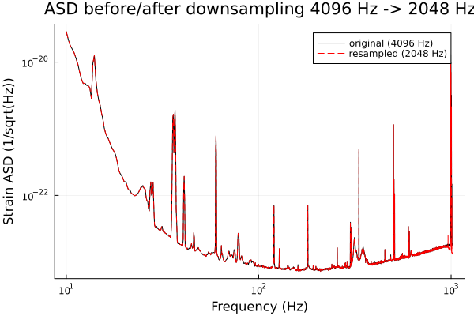
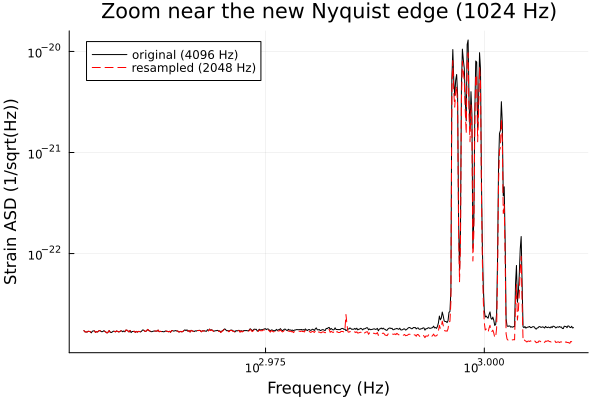

Resampling
Gravitational-wave pipelines routinely need to change a strain series' sample rate: downsampling to cut data volume and compute cost for analyses that don't need the full bandwidth (most compact-binary-coalescence searches only care about content below a few hundred Hz to a couple kHz), or upsampling to bring several detectors/pipelines onto a common grid. This tutorial demonstrates resample – a genuine port of DSP.jl's polyphase FIR resampler, already configured with GW-appropriate anti-aliasing behavior by default (see src/GravitationalWaveData/Resample.jl's module docstring) – and shows, via a before/after ASD comparison, that resampling doesn't introduce aliasing artifacts below the new Nyquist frequency.
using GravitationalWaveData
using Plots
gr()Plots.GRBackend()Fetching data
The same standard cross-check segment used throughout this project's docs: 4096 seconds of real H1 strain data surrounding GW150914.
path = fetch_open_data("H1", 1126256640, 1126260736)
strain, dq_mask = load_gwosc_strain(path)
sample_rate(strain), duration(strain)(4096.0, 4096.0)Downsampling: 4096 Hz -> 2048 Hz
resample wraps DSP.resample's polyphase resampler. DSP.jl designs its own Kaiser-windowed anti-aliasing lowpass filter at the new Nyquist frequency by default (60 dB stopband attenuation) and compensates for that filter's own group delay, so the output stays time-aligned with the input – resample doesn't need to add anything on top of what DSP.resample already provides to be GW-appropriate (see the module docstring in src/GravitationalWaveData/Resample.jl for the full detail, including the exact-integer-ratio vs. arbitrary-ratio code paths). Since both the current and requested rates are exact integers here, it takes DSP's exact-ratio polyphase path rather than the approximate arbitrary-ratio path.
strain_2k = resample(strain, 2048)
sample_rate(strain_2k), duration(strain_2k)(2048.0, 4096.0)t0 and duration are preserved – only the number of samples and the sample spacing change.
Checking for aliasing: ASD before vs. after
If resampling were done naively (e.g. simply dropping every other sample with no anti-aliasing filter first), power above the new Nyquist frequency (1024 Hz, half of 2048 Hz) would fold back ("alias") into the passband and corrupt it. Comparing the ASD before and after resampling, over the same frequency band, is a direct way to check this didn't happen: a faithful resampler leaves the spectrum below the new Nyquist frequency essentially unchanged.
Both ASDs use a 4-second Welch segment length (seglen = 4 * sample_rate), so they land on exactly the same frequency grid (df = 0.25 Hz) and overlay directly with no interpolation needed.
asd_orig = asd(strain; seglen=4 * 4096, overlap=0.5)
asd_2k = asd(strain_2k; seglen=4 * 2048, overlap=0.5)
band = (10.0, 1024.0) # up to (not including) the new Nyquist frequency
asd_orig_band = crop(asd_orig, band...)
asd_2k_band = crop(asd_2k, band...)FrequencySeries{Float64}(4056 bins, f0=10.0, df=0.25, name="strain ASD")p = plot(asd_orig_band; label="original (4096 Hz)", color=:black,
xlabel="Frequency (Hz)", ylabel="Strain ASD (1/sqrt(Hz))",
title="ASD before/after downsampling 4096 Hz -> 2048 Hz")
plot!(p, asd_2k_band; label="resampled (2048 Hz)", color=:red, linestyle=:dash,
ylabel="Strain ASD (1/sqrt(Hz))")
p
The two curves overlay almost exactly across the whole band, including right up to the new Nyquist edge at 1024 Hz – no aliasing bump or excess power piling up near that edge, which is exactly what a correctly-designed anti-aliasing filter should produce. A closer look at the region right next to the new Nyquist frequency makes this most obvious, since aliasing artifacts (if resample were buggy, or missing its anti-aliasing filter entirely) would show up as excess power right at that edge:
edge_band = (900.0, 1024.0)
p2 = plot(crop(asd_orig, edge_band...); label="original (4096 Hz)", color=:black,
xlabel="Frequency (Hz)", ylabel="Strain ASD (1/sqrt(Hz))",
title="Zoom near the new Nyquist edge (1024 Hz)")
plot!(p2, crop(asd_2k, edge_band...); label="resampled (2048 Hz)", color=:red, linestyle=:dash,
ylabel="Strain ASD (1/sqrt(Hz))")
p2
Numerical validation
Beyond this visual check, resample has been cross-checked against an independent polyphase resampler (gwpy's .resample()) on this exact GW150914 H1 segment (4096 Hz -> 2048 Hz): median 0.34%, 95th-percentile 0.56% relative PSD difference across the compared band. The only outlier bins (0.3% of them) trace back to a real narrow spectral line around 585-592 Hz in the data itself. See the Validation section of the Conventions page.
Upsampling works the same way
There's nothing downsampling-specific about resample – passing a higher rate than the input's current one upsamples instead, using the same polyphase machinery with the anti-imaging filter now placed at the new (higher) Nyquist frequency. A short crop keeps this demonstration quick:
zoom = crop(strain, 1126256640.0, 1126256650.0) # first 10 s of the segment
zoom_8k = resample(zoom, 8192)
sample_rate(zoom), sample_rate(zoom_8k)(4096.0, 8192.0)As with downsampling, t0 and duration are preserved – only the sample count and spacing change.
duration(zoom), duration(zoom_8k)(10.0, 10.0)This page was generated using Literate.jl.